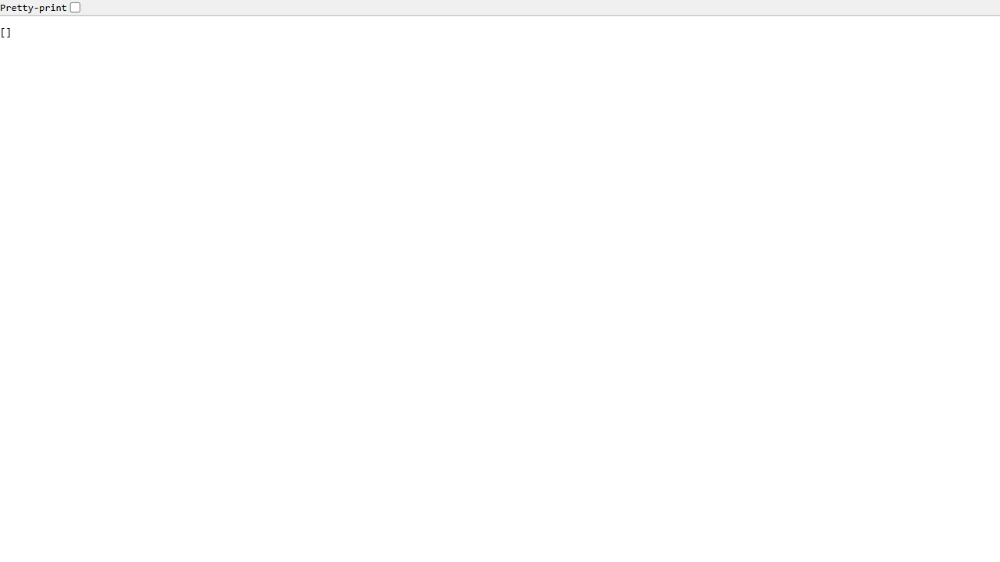
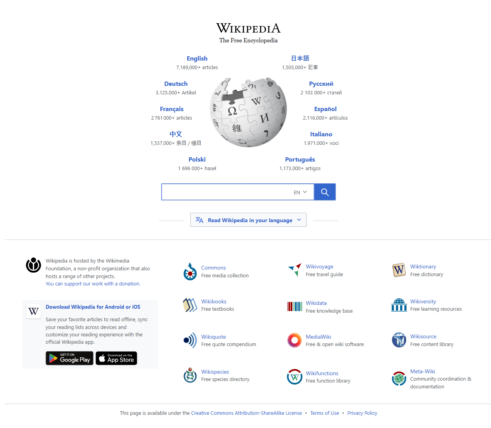

Source File: tests\first_tests\BCP_Multiple_Pages.spec.ts
Generated: July 9, 2026
| Field | Details |
|---|---|
| Test Suite Name | Multiple Pages (Tabs) in a Single Browser Context |
| Application URLs | https://app.vwo.com/login, https://example.com, https://www.wikipedia.org |
| Objective | Verify multiple pages/tabs can be opened within a single browser context under one browser instance |
| Browser | Chromium |
| Script Type | Playwright Script (non-test-runner) |
| TC ID | Test Scenario | Test Steps | Expected Result | Browser | Status |
|---|---|---|---|---|---|
| TC-001 | Verify Page 1 navigates to VWO login in the shared context |
1 Launch Chromium browser 2 Create a single browser context 3 Open Page 1 (tab) in the context 4 Navigate to https://app.vwo.com/login 5 Capture title and screenshot |
- Browser launches successfully - Context is created - Page navigates to VWO login URL |
Chromium | ✔ PASSED |
| TC-002 | Verify Page 2 navigates to Example Domain in the same context |
1 Open Page 2 (new tab) in the same context 2 Navigate to https://example.com 3 Capture title and screenshot |
- New tab opens within the same context - Page navigates to Example Domain - Title displays "Example Domain" |
Chromium | ✔ PASSED |
| TC-003 | Verify Page 3 navigates to Wikipedia in the same context |
1 Open Page 3 (new tab) in the same context 2 Navigate to https://www.wikipedia.org 3 Capture title and screenshot |
- New tab opens within the same context - Page navigates to Wikipedia - Title displays "Wikipedia" |
Chromium | ✔ PASSED |
| TC-004 | Verify all pages coexist independently under one context and cleanup completes |
1 All 3 pages remain open simultaneously 2 Close each page in reverse order 3 Close context 4 Close browser |
- All 3 pages operate independently - No cross-page interference - Cleanup completes without errors |
Chromium | ✔ PASSED |
| Concept | Description |
|---|---|
| Single Context, Multiple Pages | Multiple context.newPage() calls create separate tabs sharing the same session (cookies, storage) |
| Page Independence | Each tab navigates to a different URL and operates independently |
| Context Sharing | All pages share the same browser context (isolated session) |
| Cleanup Order | Pages closed first, then context, then browser (reverse order of creation) |
| Metric | Value |
|---|---|
| Total Test Cases | 4 |
| Passed | 4 |
| Failed | 0 |
| Browser | Chromium |
| Artifacts | Screenshots |
Browser Launched Context Created Page 1 - Title: Page 2 - Title: Example Domain Page 3 - Title: Wikipedia Browser closed successfully



import {chromium, Browser, BrowserContext, Page} from "playwright";
async function run() {
let browser: Browser = await chromium.launch({headless: false});
console.log("Browser Launched");
let context: BrowserContext = await browser.newContext();
console.log("Context Created");
let page1: Page = await context.newPage();
await page1.goto("https://app.vwo.com/login", { waitUntil: "networkidle" });
await page1.screenshot({ path: "screenshots/BCP_Multiple_Pages/01-page1-vwo-login.png", fullPage: true });
console.log("Page 1 - Title:", await page1.title());
let page2: Page = await context.newPage();
await page2.goto("https://example.com", { waitUntil: "networkidle" });
await page2.screenshot({ path: "screenshots/BCP_Multiple_Pages/02-page2-example.png", fullPage: true });
console.log("Page 2 - Title:", await page2.title());
let page3: Page = await context.newPage();
await page3.goto("https://www.wikipedia.org", { waitUntil: "networkidle" });
await page3.screenshot({ path: "screenshots/BCP_Multiple_Pages/03-page3-wikipedia.png", fullPage: true });
console.log("Page 3 - Title:", await page3.title());
await page1.close();
await page2.close();
await page3.close();
await context.close();
await browser.close();
console.log("Browser closed successfully");
}
run();